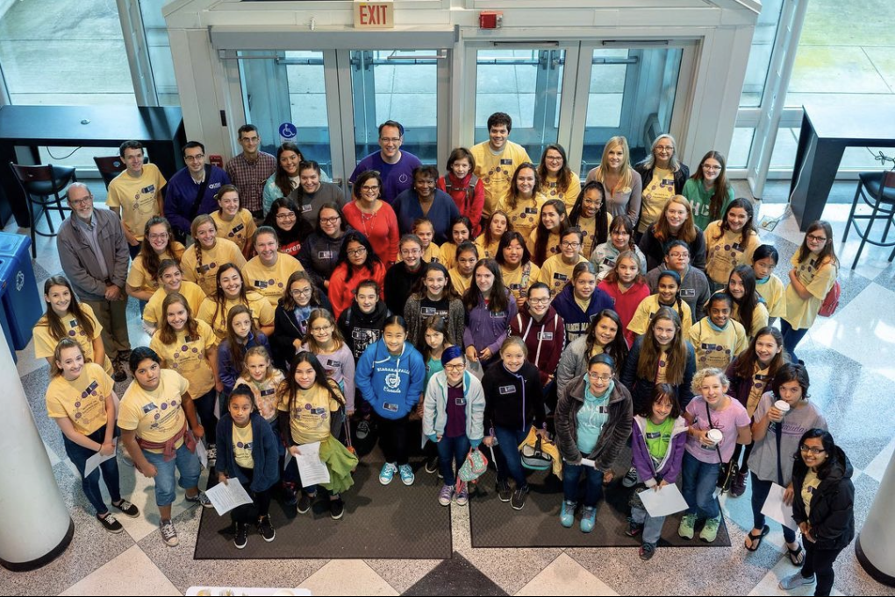

DIGITAL stands for Dukes Inspiring Girls Into Technology Across Limits. It is an annual program run by Women in Technology that invites young girls from the Harrisonburg school system to come to JMU to learn about technology. Since technological careers are still highly dominated by men it is important to show young women the possibilities for them in these careers and to encourage them to pursue a career in technology.
